Single Cell Transcriptomics Activity
Activity
Tutorial Steps
We will be working through a modified/truncated version of the Galaxy Training Tutorial “Filter, plot, and explore single cell RNA-seq data with Seurat” Tutorial.
Changes include:
- several subsections within QC will be omitted
- we rearranged the Dimensionality Reduction section
- we will stop before the Differential Expression Testing: Finding Markers section
You may want to view the whole Galaxy Training Tutorial later for further steps or explanation, but we would recommend not following along with it during this activity considering that we have abbreviated and rearranged a portion of it.
Setting up Galaxy
Open Galaxy
Please use this
link to access the Galaxy platform specifically for our
activity.
Note: this link will only be active for this workshop, but you can continue to use Galaxy resources for free by visiting usegalaxy.org.
Set up Galaxy’s history pane
If you have files in your history already,
use the + button on the top right of the history pane to
Create new history.
Click the
pencil button next to “Unnamed history”. Fill in the name with something
descriptive/appropriate. Click “Save”.
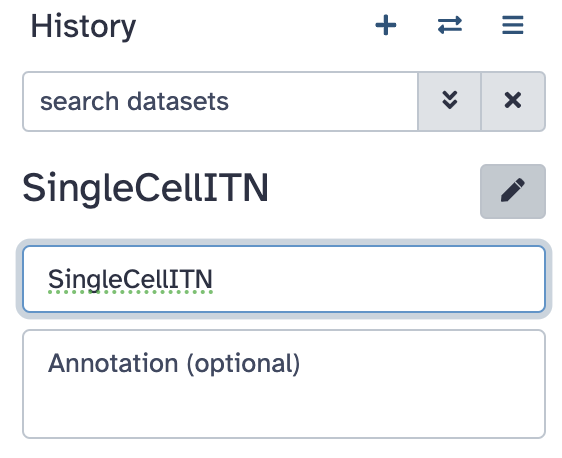
Now we are ready to start the tutorial!
Get Data onto Galaxy and generate a Seurat object
Click on the “Get Data onto Galaxy and generate a Seurat object” link to get started in the tutorial.
EBI Data Retrieval
Copy and paste
EBI SCXA Data Retrieval into the tool search.
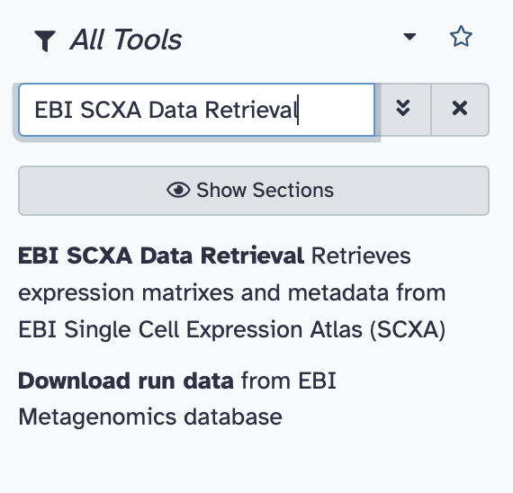
Select
EBI SCXA DATa Retrieval.
Copy paste E-MTAB-6945 into the
SC-Atlas experiment accession field
Make sure the
“Choose the type of matrix to download” field says
Raw filtered counts.
Click the Run tool button.
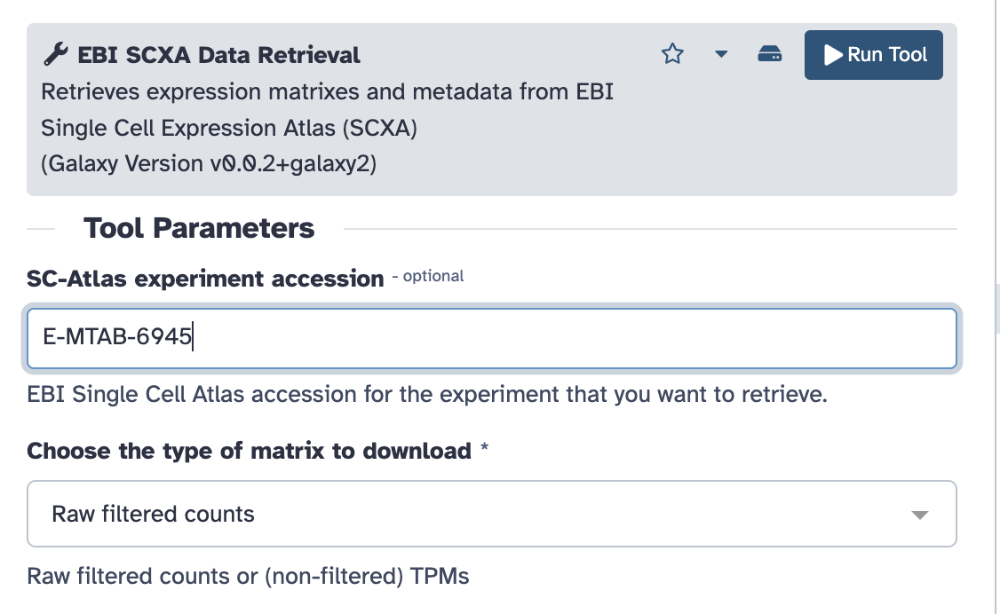
You will see your history pane show some new activity, with rectangles showing the data file upload first in gray (to show that the job has been requested), then yellow (to show that Galaxy is working on it), and finally green (to show that the job is complete).
Note: do not worry about the numbers next to each step - depending on how many times you run requests you will have different numbers.
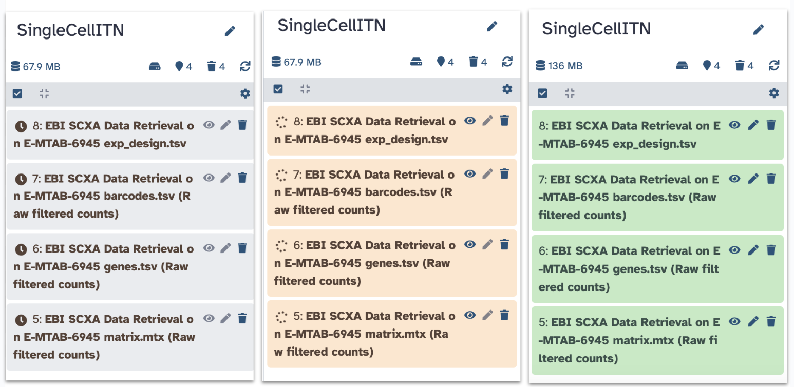
You have now imported the exp_design.tsv,
barcodes.tsv, genes.tsv,
matrix.mtx and files into Galaxy! Note that each file
starts with EBI SCXA Data Retrieval on E-MTAB-6945 to
indicate how we got them.
Generating a Seurat Read10X Object
Now we need to get our data into a format that the Seurat tools will recognize.
Copy paste Seurat Read10x into
the tools search.
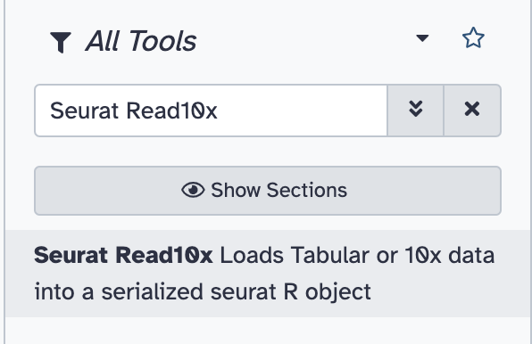
Select Seurat Read10x.
Select the pull down menu for the
Expression matrix in sparse matrix format (.mtx) and select
the matrix.mtx file.
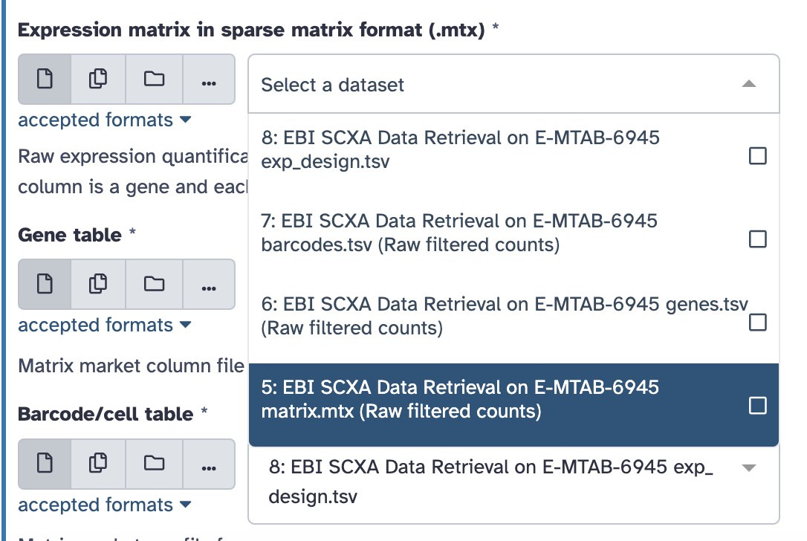
Continue with the rest of the files to select the appropriate file
for each field. Remember that each file starts with
EBI SCXA Data Retrieval on E-MTAB-6945.
Select the pull down menu for the
Gene table and select the genes.tsv file.
Select the pull down menu for the
Barcode/cell table and select the barcodes.tsv
file.
Select the pull down menu for the
Cell Metadata and select the exp_design.tsv
file.
Type 5 into the
Minimum cells to include features.
Ensure that the
Choose format of the output field says
RDS with a Seurat object.
Rename the output to
Initial Seurat Object.
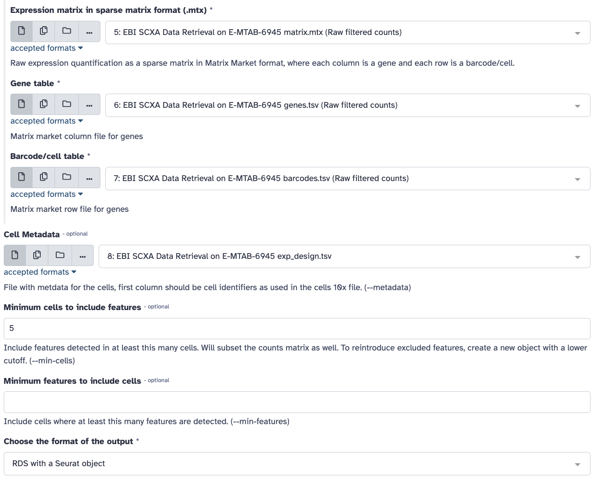
Click Run Tool Button.
You should see a green message indicating that the job is now in the queue.
Click on the pencil button of the new output that shows up in the history pane.
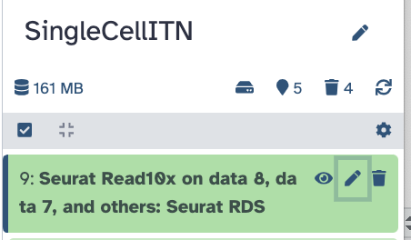
Replace the name of the object to
Initial Seurat Object and press save.
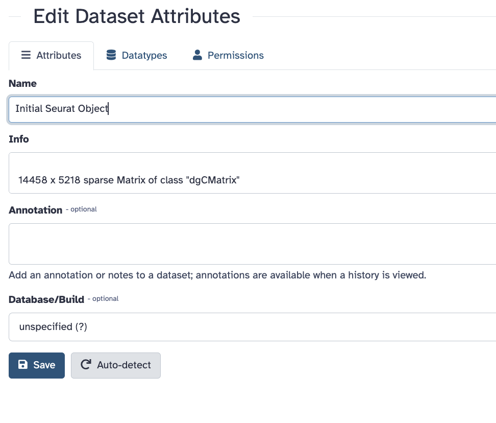
Now we have a Seurat object so we can start using Seurat to work with our data!
QC and further processing of the Seurat object
Our first step is to do some Quality Control checks aka QC to evaluate our data.
QC: Visualize Counts
There will be a number of “cells” that are actually just empty droplets or low-quality. There will also be genes that could be sequencing artifacts or that appear with such low frequency that statistical tools will fail to accurately analyze them.
This background noise of both cells and genes not only makes it harder to distinguish real biological information from artifacts, but also makes it computationally demanding to analyze.
We want to filter our cells, but first we need to know what our data looks like to make appropriate filters.
We will not have time to go through all of the possible plots one might use, but we will do some evaluations. Remember that you can always do the full tutorial in your own time.
Search for the Plot with Seurat
tool in the tool search.
Select **Plot** with Seurat.
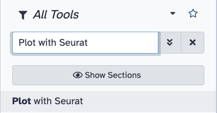
Ensure that the RDS file field shows our Initial Seurat Object.
For the Plot_type_selector
dropdown menu, select VlnPlot.
This stands for violin plot.
For the Features field type in
nCount_RNA.
Scroll down to Log and toggle it
to yes.
Click the Run Tool button.
You should see a green message about the job being in the queue and a new block will show up in the history that says plot. It will take some time for the plot to be generated.
Once the new block turns green click on the eye button to see the plot.
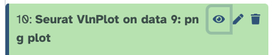
This plot shows us the spread of cells in our data containing a given number of counts (or transcripts) observed in a given cell. We can use this plot, and others like it in a moment, to help filter out the uninformative cells.
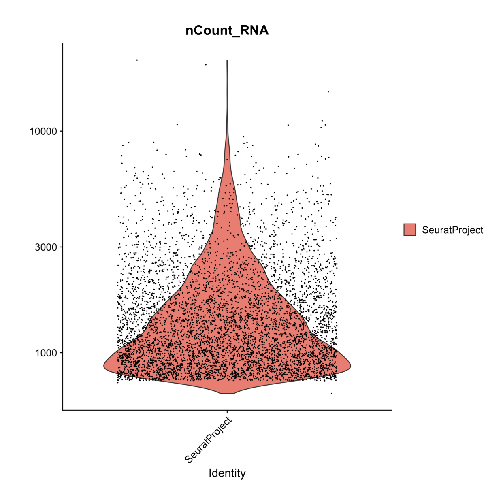
We see a severe drop off in the number of cells that contain fewer than 500 and more than 10,000 transcripts. These will be our nCount thresholds that we filter based on.
QC: Visualize Features
In a similar fashion we can visualize the spread of cells in our data expressing a given number of features (or genes).
Search for the Plot with Seurat
tool in the tool search again.
Select **Plot** with Seurat.
Ensure that the RDS file field shows our Initial Seurat Object.
For the Plot_type_selector
dropdown menu, select VlnPlot.
For the Features field type in
nFeature_RNA.
Scroll down to Log and toggle it
to yes.
Click the Run Tool button.
Now, we could pick filtering thresholds based on these plots, and in a typical pipeline we would also plot the proportion of features that map to the mitochondrial genome and to other QC checks but we will stop here for now.
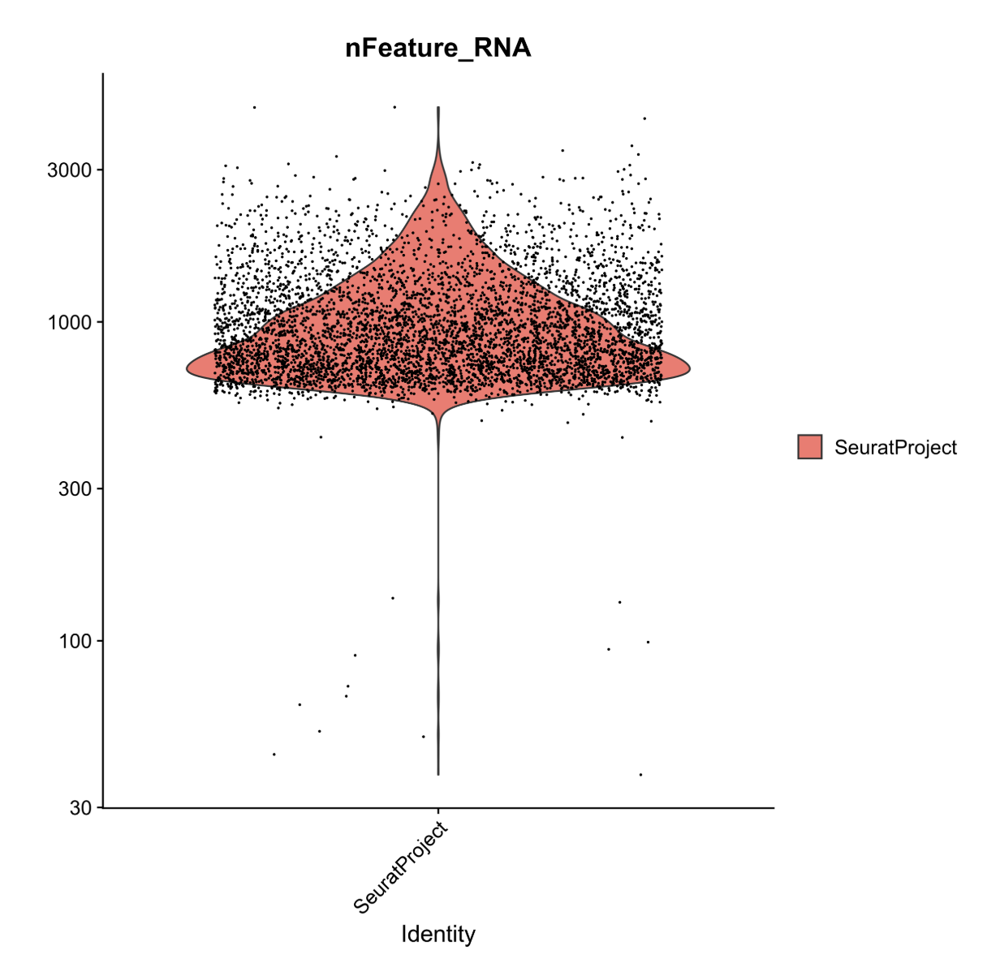
In this plot, we can see that very few cells in the dataset contain fewer than ~500 genes. Biologically, this makes sense, and the cells appear to be outliers in the data. As such, we will set our lower threshold of genes (nFeature_RNA) at 500.
Filter Cells
Recall that from our first plot we saw a severe drop off in the number of cells that contain fewer than 500 and more than 10,000 transcripts. These will be our nCount thresholds that we filter based on. and that our lower threshold of genes would be 500 from our second plot.
Will will now apply these thresholds to filter our data.
Search for the
Seurat FilterCells tool in the tool search.
Select Seurat FilterCells.
Ensure that the RDS file field shows our Initial Seurat Object.
In Subsets used to filter cells”,
Name of Parameter to filter on field, select
nCount_RNA from the dropdown menu.
Select 500.0 for the Minimum value.
Select 10000.0 for the Maximum value.
Click on the button that says
Insert Subsets used to filter cells
For the
Name of Parameter to filter on field, select
nFeature_RNA from the dropdown menu.
Select 500.0 for the Minimum value.
Select 1000000000.0 for the Maximum value.
Click the Run Tool button.
You will see a green message a new block in the history that says “Seurat Filter cells on data”, after a few moments it will turn green.
Rename the output object to be
Filtered Seurat Object by clicking on the pencil button and
replacing the name and saving the changes.
Normalize Data
Now we will normalize our data. This helps reduce the differences between gene counts by fitting total counts across cells in our data to be comparable to one another. SCTransform regularizes the gene expression profiles via a negative binomial regression while also controlling for overfitting of the data.
Search for the
Seurat NormaliseData tool in the tool search.
Select Seurat NormaliseData.
Ensure that the RDS file field shows our Filtered Seurat Object.
For the Normalization Method
ensure that the drop down menu shows log Normalise.
Click the Run Tool button.
Once the new SeuratNormalise Data object
turns green in the history pane, rename it to be
Normalised Seurat Object by clicking on the pencil button
and replacing the name and saving the changes.
Find Variable Genes
The datasets have loads of genes, but not all of them vary in expression from cell to cell. For instance, housekeeping genes are defined as not changing much from cell to cell, so we could remove these from our data to simplify our analysis.
The find variable genes, this step flags genes that do vary across cells to expedite future analyses and ensure that we, and Seurat, don’t waste time looking for meaningful differences where they don’t exist.
Search for the
Seurat FindVariableGenes tool in the tool search.
Select
Seurat FindVariableGenes.
Ensure that the RDS file field
shows our Normalised Seurat Object.
Ensure that the
Choose the format of the output field shows RDS with a
Seurat Object.
Click the Run Tool button.
This will result in the creation of two new objects:
- A new Seurat object with variable features identified and flagged
- A tabular file with a list of these variable genes.
This gene list may be used as a sneak peak into understanding what the dataset will look like! We can begin to understand which genes are going to be driving downstream clustering of our cells and maybe even make some decisions about whether we are happy with our filtering based on this list.
Rename the new Seurat object called
Seurat FindVariableGenes on Data some number:Seurat RDS to
be Normalised Seurat Object with Variable Features by
clicking on the pencil button, replacing the name and clicking save.
Scale Data
Now we will scale the data.
What is scaling?
This is an important step to set up our data for further dimensionality reduction. It will transform the dataset such that all genes have the same variance and a zero mean. It helps negate sequencing depth differences between samples, since the gene levels across the cells become comparable.
Note: that the differences from scaling etc. are not the values you have at the end - i.e. if your cell has average GAPDH levels, it will not appear as a “0” when you calculate gene differences between clusters.
Search for the Seurat ScaleData
tool in the tool search.
Select Seurat ScaleData.
Ensure that the RDS file field
shows our object called Normalised Seurat Object with Variable
Features.
Ensure that the
Choose the format of the output field shows RDS with a
Seurat Object.
For the Genes to use dropdown
menu select
Seurat FindVariableGenes on data 12: Variable genes **tabular file**.
This is the gene list we just made in the last step.
For Vars to regress ensure that
it says nCount_RNA.
This function allow us to mitigate the effects of confounding factors in our dataset. In true research practice, one might regress out multiple variables including but not limited to percent mitochondria, cell cycle scoring, and feature count. As currently written, this tool only allows us to regress out a single variable.
For Statistical Model ensure
that it says Linear model.
Click the Run Tool button.
This step can take a few moments.
Once the new object turns green, rename it to
be Scaled,Preprocessed Seurat Object by clicking on the
pencil button, replacing the name and clicking save.
Nice! We now have a preprocessed Seurat object!
Dimensionality Reduction
Although we’ve made our expression values comparable to one another and our overall dataset less computationally demanding, we still have way too many dimensions (n cells x n genes!).
Transcript changes are not usually singular–which is to say, genes function and exist in pathways and groups. It would be easier to analyze our data if we could group these differences. To address this we will run principal component analysis (PCA).
Run PCA
Principal components (PCs) are calculated from highly dimensional data to find the most representative spread in the dataset. So in our highly variable gene dimensions, there will be one line (axis) that yields the most spread and variation across the cells. That will be our first principal component.
We can calculate the first handful of principal components in our data to drastically reduce the number of dimensions.
Search for the Seurat RunPCA
tool in the tool search.
Select Seurat RunPCA.
Ensure that the RDS file field
shows our object called Scaled, Preprocessed Seurat Object.
Ensure that the
Choose the format of the output field shows RDS with a
Seurat Object.
For the dropdown menu in the
Genes to Scale section, select the variable genes tabular
file.
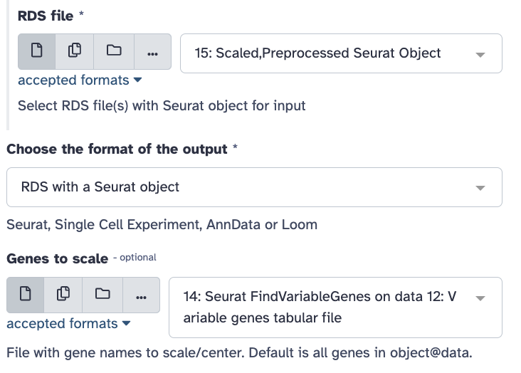
Click the Run Tool button.
You will see 4 new objects: Seurat Std dev,
Seurat Loadings, Seurat Embeddings, and
Seurat RDS (the object type we have mostly been using).
Once the new object turns green, rename the
one that says Seurat RDS to be
PCA Processed Seurat Object by clicking on the pencil
button, replacing the name and clicking save.
So what are all these new objects?
- Seurat RDS - includes all of the following PCA metadata
- Seurat Embeddings - Principal component values for each of the cells in your dataset
- Seurat Loadings - Principal component values for each of the genes in your dataset
- Seurat Std dev - Standard deviations of each principal component coordinates
Run UMAP
Next we will use UMAP, the most recently developed, and most widely used dimensionality reduction method for visualization of principal component data. It has been optimized since tSNE to better preserve global structure and is less computationally demanding.
Note that this is where the walkthrough diverges from the Galaxy Training tutorial, rearranging the dimensionality reduction steps.
Search for the Seurat UMAP tool
in the tool search.
Select Seurat UMAP.
Ensure that the RDS file field
shows our object called PCA Processed Seurat Object.
Ensure that the
Choose the format of the output field shows RDS with a
Seurat Object.
For the Dims type
1:15.
Click the Run Tool button.
Plot Gapdh
Search for the Plot with Seurat
tool in the tool search.
Select Plot with Seurat.
Ensure that the RDS file field
shows “Seurat UMAP on data X: Seurat RDS” as the input for this step
(this file is the output from the previous step).
Confirm that the
Plot_type_selector option is “FeaturePlot”.
For the Features option, type
Gapdh.
Click the Run Tool button.
View the resulting plot by clicking the eye
icon ( ) next to the output
) next to the output
.png file in the history.
Plot Il2ra
Search for the Plot with Seurat
tool in the tool search.
Select Plot with Seurat.
Ensure that the RDS file field
shows “Seurat UMAP on data X: Seurat RDS” as the input for this step
(this file is the output from the Run UMAP step).
Confirm that the
Plot_type_selector option is “FeaturePlot”.
For the Features option, type
Il2ra.
Click the Run Tool button.
View the resulting plot by clicking the eye
icon ( ) next to the output
) next to the output
.png file in the history.
Can I plot UMAP clusters at this stage?
If you wanted to plot a UMAP projection at this stage using thePlot with Seurat tool and Plot_type_selector
DimPlot option (as described in the Galaxy Training
tutorial), do not use “Group by: RNA_nn_res.0.5” argument. Because the
Find Neighbors and Find Clusters steps haven’t been used yet, this
option isn’t relevant yet, and you won’t be able to visualize clusters.
Find Neighbors
Search for the
Seurat FindNeighbours tool in the tool search.
Ensure that the RDS file field
shows “Seurat UMAP on data X: Seurat RDS” as the input for this step
(this file is the output from the Run UMAP step).
For the Reduction option, type
pca.
For the Dimensions option, copy
and paste 1,2,3,4,5,6,7,8,9,10,11,12,13,14,15.
For the Assay option, type
RNA.
Click the Run Tool button.
The output of this will be “Seurat FindNeighbours on data Y: Seurat RDS” (and a corresponding CSV file)
Find Clusters
Search for the
Seurat FindClusters tool in the tool search.
Ensure that the RDS file field
shows “Seurat FindNeighbours on data Y: Seurat RDS” as the input for
this step.
In the Advanced Options section,
for the Resolution option, type 0.5
Click the Run Tool button.
The output of this will be “Seurat FindClusters on data Z: Seurat RDS” (and a corresponding CSV file)
Plot UMAP
Search for the Plot with Seurat
tool in the tool search.
Ensure that the RDS file field
shows “Seurat FindClusters on data Z: Seurat RDS” as the input for this
step.
Select “DimPlot” for the
Plot_type_selector option.
For the Group by option, type
RNA_nn_res.0.5
Click the Run Tool button.
View the resulting plot by clicking the eye
icon ( ) next to the output
) next to the output
.png file in the history.